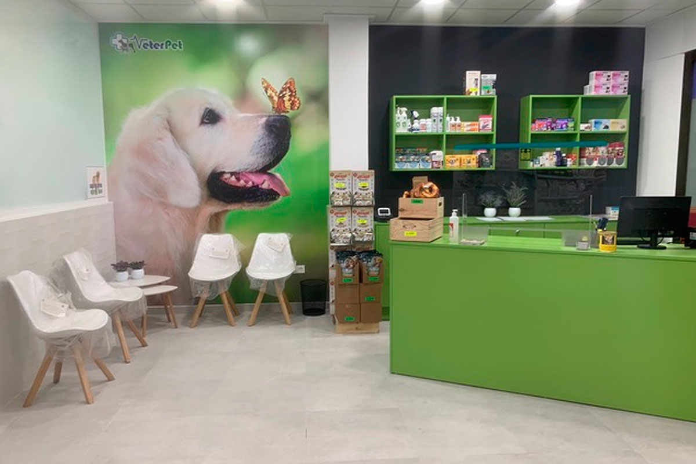
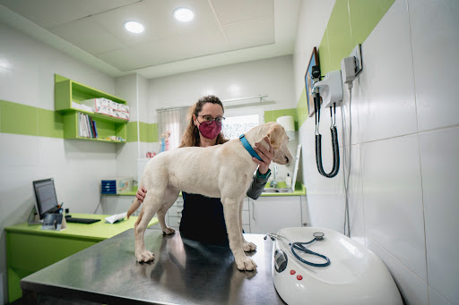

Sobre Nuestra Clínica
Desde su fundación en el año 2015, Patitas Andantes se ha dedicado al cuidado integral de mascotas, combinando tecnología moderna con un enfoque humano y sensible. Nuestra misión es ofrecer servicios veterinarios de calidad que promuevan la salud, el bienestar y la felicidad de cada animal.
Contamos con instalaciones amplias, área de cirugía, laboratorio clínico, diagnóstico y tienda especializada. Brindamos atención personalizada de lunes a viernes para garantizar el bienestar de nuestros pacientes peludos.
 Calle 12 #45, La Habana, Vedado, Cuba
Calle 12 #45, La Habana, Vedado, Cuba
 +53 7 123 4567
+53 7 123 4567